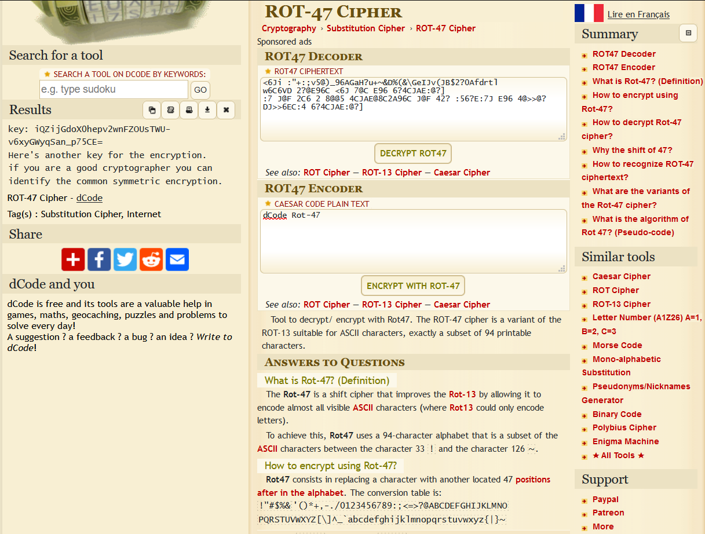
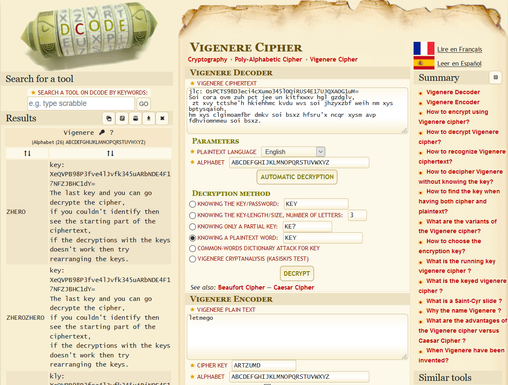

Uncipher Me
Description
Challenge Files
Lets begin with the keys.
Bash 2 lines / static highlight
Wrap
Copy
1
2
cat key.txt
TjogR0kzRE9OWldHUVpER01SVkdFWURLT0JWSEUyRE1NSllHNFpEQU5CVEdBNFRJTUJSR0VZVEdNQlpHTTRUU01CWUdJMlRNTUJRR1U0RElOSlhHUTJUS05CUUdBM1RLTlpTRzQzRE1PQlRIRTJESU9KWUc0M0RRTVpXSEU0VE1NWlpHUVlUU01CVEhFWkRBTkpYSEU0RE1NSldHTVlURU5KU0c0NFRDTVpVSEU0RElOSlFHUVlUTU5SV0dNNFRBTVJYR000VFFOUlVHSVlUQ01SWkdJMkRJTkJYR0EzVFNNUlZHSTREQ05aWUc0NERBTlpVR1lZRE1NQlRHUTNEQU9CWEc0WkRHTkpWSEVZRFNOQlJIQTJUS01KV0dZNFRPT0pVR1EzVEtPQlRHNDRUT09CVkdJNERPTUpRR1VaVE1OQlVHRTRET05SWkdBWVRTT0JURzQ0REFNWlRHRVpUQ09KVUdRM0RJTlpTR1FaRE9OUlRHWTNES09KVEdFWkRHT0JWR0UzVEVPSlNIQTRUTU5SVkdNWURTTVJXR0EyRE9OSlVHNDRUT01CWEdFWURHTVJYR1VaVE1PSlZHNFlEUU5KVkhBNERNTlJSR01aVFFOUldHSTNET05aU0dBM0RDT0pSR00zREFOUlRHWTJUU01KVUhBNERPTlpSR0kzREtOWlJHWTJEQ09KWUdFM0RTTlpRR0lZRFFOWlJHUVpETU1CVEhBWkRBTkJYSEU0VENNSlpHQTNUQU1SVEhFWlRBTUJWR0FaRENOWlVHWTJUSU1aU0c0WVRRTVpXR0U0RFFPSlhHQVpUU09CU0dZNFRBT0JUR00yVEdOQlpHSTJERU1CUkc0NFRHTVpSSEUzREtOWlZHUTRETU5KWkdJMkRRTkJYSEEzRENOQlpHQTRERU1aVEdZWVRFTkJZR0U0VEVNUlFHTTRET01CVkdZWVRLTUpSR01aVEVPQlJHSTJUUU9CWEdVMlRLTkJZR0lZRE1OQlNHQVlER01KWEhBWlRFTVJTR0UzVFFPQlNHRTRETU5KWUdBMlRPTUpUR0VaVEVOUllHTTRETU1KUUdJNERJTUpZRzRZVE9PSlVIRTRET09CUUdJWlRNTUpXR00yVEVPQlhHSTJUT09KU0dNM1RRT0pSRzRaVElNUlNHSVlUT09KUkdRWVRJTkpZRzQzVEdPQlJHWVpUR09CU0hBM0RRTlpZR1FaVFNOQlpHWTNEQU1aU0dVM1RHTkJSR1FaVENPQlRHUTNUTU1aVUdRMkRHTVpTR0FZREFPSlJHSTJEU01KU0dVM0RJTlpUSEVaUT09PT0KIGU6IEdZMlRLTVpYCiBjdDogIEdCN2tUSGFSZGtII0lSZkhaP1JqSDgoYWZHYy0wZUcmZUxiSTVJUmlIYUlwbEcmVk9tR2N6K2VGZj0oWkYpPWhZSDhEOWRIODM/WkgjOWduSTU5TGFJV3tzZUdjLTlpR0JQKFlHQjdZV0lXYWFmSVdzcGdIYTBqbkclel9nSVhFfm1IOTBnaklXI3lvSVhFO2lHZERSa0k1anNwSCNqdmpJV2FSY0djXzxaR2RWYWhIOD9qbUdCITBiSCE/RmZHJmVVbUYqIUNkSCM5VWpIWj9GZUZmbGhhRmZjZVdHY3o8Ykk1UmdnSCE/T2ZIWndJZ0k1YVhhSDgzX2VHJjRDbEgjUlhmSCNJZGlGZ1A/WUgjYXNrR0JHemFGZ1EzZkk1e35vRipQPGJGKlB0VEhaZTlnSTVhcGtJVyNwbkhaVXxaSVhPNW1IYUltaEhaZF9YR0JQdFVGZmxZVklXI3lxRippOWVIODMrWEgjYXBmR2NgNmdGZzdxYkhhOXBpSFo/TGdHZFZkakdCaCtkSFplM2dIOTBka0YqcjZpSVdhTGdJV3smbUlXYVJiSTVzJnJJNVJka0lXYUxnSGFJZGNHQlAoWUcmblJqSCNJZ2lHQlAkZEdjYEZqRyZuUmZHQmAzWUk1OztsSFpuRmZHJSsrVkYpfWJTSCM5VWpGZ1o5ZkdCK3xYRyZESWhHY3ErZkhhOVJoRmdQJFhJWE47Z0dCUChiRiklVlZGZn13ZEZmJWJWSCM5UmdIIzlhaUhhSWplSTVqeWtHYy0zakclKz9YSCE/SWhHJV8/WUYqITZjRil9ZVdJNTlYaElYRSNpSTVqZ2ZGKiEzaEghdl9XR0I3elpJNTAzV0YpPW5ZSFooRmJIWmR8VklXO2dmRmZ9dGNGZ0d3VkYqUChiSGE5cG1HZE02Y0k1SWdmR0JoPFpHZFZJZkYqUChjSCNzJm1HQit8YUYqaHxiSFpVK1pGKiE2ZUdkVkxrSVg1e3RHZE1YbkhaKExoSCNJT2RJNTAzWEZmPWhVRzU=
Seems like base64
Python 7 lines / static highlight
Wrap
Copy
1
2
3
4
5
6
7
import base64
key1 = base64 . b64decode ( key1 )
print ( key1 . decode ())
# N: GI3DONZWGQZDGMRVGEYDKOBVHE2DMMJYG4ZDANBTGA4TIMBRGEYTGMBZGM4TSMBYGI2TMMBQGU4DINJXGQ2TKNBQGA3TKNZSG43DMOBTHE2DIOJYG43DQMZWHE4TMMZZGQYTSMBTHEZDANJXHE4DMMJWGMYTENJSG44TCMZUHE4DINJQGQYTMNRWGM4TAMRXGM4TQNRUGIYTCMRZGI2DINBXGA3TSMRVGI4DCNZYG44DANZUGYYDMMBTGQ3DAOBXG4ZDGNJVHEYDSNBRHA2TKMJWGY4TOOJUGQ3TKOBTG44TOOBVGI4DOMJQGUZTMNBUGE4DONRZGAYTSOBTG44DAMZTGEZTCOJUGQ3DINZSGQZDONRTGY3DKOJTGEZDGOBVGE3TEOJSHA4TMNRVGMYDSMRWGA2DONJUG44TOMBXGEYDGMRXGUZTMOJVG4YDQNJVHA4DMNRRGMZTQNRWGI3DONZSGA3DCOJRGM3DANRTGY2TSMJUHA4DONZRGI3DKNZRGY2DCOJYGE3DSNZQGIYDQNZRGQZDMMBTHAZDANBXHE4TCMJZGA3TAMRTHEZTAMBVGAZDCNZUGY2TIMZSG4YTQMZWGE4DQOJXGAZTSOBSGY4TAOBTGM2TGNBZGI2DEMBRG44TGMZRHE3DKNZVGQ4DMNJZGI2DQNBXHA3DCNBZGA4DEMZTGYYTENBYGE4TEMRQGM4DOMBVGYYTKMJRGMZTEOBRGI2TQOBXGU2TKNBYGIYDMNBSGAYDGMJXHAZTEMRSGE3TQOBSGE4DMNJYGA2TOMJTGEZTENRYGM4DMMJQGI4DIMJYG4YTOOJUHE4DOOBQGIZTMMJWGM2TEOBXGI2TOOJSGM3TQOJRG4ZTIMRSGIYTOOJRGQYTINJYG43TGOBRGYZTGOBSHA3DQNZYGQZTSNBZGY3DAMZSGU3TGNBRGQZTCOBTGQ3TMMZUGQ2DGMZSGAYDAOJRGI2DSMJSGU3DINZTHEZQ====
# e: GY2TKMZX
# ct: GB7kTHaRdkH#IRfHZ?RjH8(afGc-0eG&eLbI5IRiHaIplG&VOmGcz+eFf=(ZF)=hYH8D9dH83?ZH#9gnI59LaIW{seGc-9iGBP(YGB7YWIWaafIWspgHa0jnG%z_gIXE~mH90gjIW#yoIXE;iGdDRkI5jspH#jvjIWaRcGc_<ZGdVahH8?jmGB!0bH!?FfG&eUmF*!CdH#9UjHZ?FeFflhaFfceWGcz<bI5RggH!?OfHZwIgI5aXaH83_eG&4ClH#RXfH#IdiFgP?YH#askGBGzaFgQ3fI5{~oF*P<bF*PtTHZe9gI5apkIW#pnHZU|ZIXO5mHaImhHZd_XGBPtUFflYVIW#yqF*i9eH83+XH#apfGc`6gFg7qbHa9piHZ?LgGdVdjGBh+dHZe3gH90dkF*r6iIWaLgIW{&mIWaRbI5s&rI5RdkIWaLgHaIdcGBP(YG&nRjH#IgiGBP$dGc`FjG&nRfGB`3YI5;;lHZnFfG%++VF)}bSH#9UjFgZ9fGB+|XG&DIhGcq+fHa9RhFgP$XIXN;gGBP(bF)%VVFf}wdFf%bVH#9RgH#9aiHaIjeI5jykGc-3jG%+?XH!?IhG%_?YF*!6cF)}eWI59XhIXE#iI5jgfF*!3hH!v_WGB7zZI503WF)=nYHZ(FbHZd|VIW;gfFf}tcFgGwVF*P(bHa9pmGdM6cI5IgfGBh<ZGdVIfF*P(cH#s&mGB+|aF*h|bHZU+ZF*!6eGdVLkIX5{tGdMXnHZ(LhH#IOdI503XFf=hUG5
Alright!, Seems like RSA inside the key huhN and e seem to be base32, since they are all CAPS
ct appears to be base85, since all these weird characters
Python 13 lines / static highlight
Wrap
Copy
1
2
3
4
5
6
7
8
9
10
11
12
13
N = key1 [ 1 ]
e = key1 [ 3 ]
c = key1 [ 5 ]
N = int ( base64 . b32decode ( N ))
e = int ( base64 . b32decode ( e ))
c = int ( base64 . b85decode ( c ))
p , q = sympy . ntheory . primefactors ( N )
d = pow ( e , - 1 , ( p - 1 ) * ( q - 1 ))
m = pow ( c , d , N )
m = bytes . fromhex ( hex ( m )[ 2 :])
print ( m . decode ())
This brings us
Plain text 2 lines / static highlight
Wrap
Copy
1
2
key: kD87Ef4y043nhee-W_Hytc0d3Bkiw4Gw21m-7AHpZkc=
This is one of the keys for the encryption.Totally 3 keys to decrypt the encrypted text
Okay, time for round 2
Bash 6 lines / static highlight
Wrap
Copy
1
2
3
4
5
6
cat key_2.txt
Are your rots strong.
<6Ji :"+:;v5@)_96AGaH?u+~&D%(& \G eIJv(JB $2 ?0Afdrtl
w6C6VD 2?@E96C <6J 7@C E96 6?4CJAE:@?]
:7 J@F 2C6 2 8@@5 4CJAE@8C2A96C J@F 42? :56?E:7J E96 4@>>@? DJ>>6EC:4 6?4CJAE:@?]
Seems like a much anticipated rot47, dcode.fr to our rescue

Plain text 3 lines / static highlight
Wrap
Copy
1
2
3
key: iQZijGdoX0hepv2wnFZOUsTWU-v6xyGWyqSan_p75CE=
Here's another key for the encryption.
if you are a good cryptographer you can identify the common symmetric encryption.
ROUND 3, FIGHT
Bash 6 lines / static highlight
Wrap
Copy
1
2
3
4
5
6
cat key_3.txt
jlc: OsPCTS98D3eci4cXumo345lOQiRUS4E17UJQXAOG1uM =
Soi cora ovm zuh pct jee un kitfxwxv hgl gzdglv,
zt xvy tctshe'h hkiehhmc kvdu wvs soi jhzyxzbf weih nm xys bptysqaioh,
hm xys clgimoamfbr dmkv soi bsxz hfsru' x ncqr xysm avp fdhviomnmeu soi bsxz
First guess, Vignere cipher, lets head to dcode.fr again,

Plain text 4 lines / static highlight
Wrap
Copy
1
2
3
4
key: XeQVPB98P3fve4lJvfk345uARbNDE4F17NFZJBHC1dY=
The last key and you can go decrypte the cipher,
if you couldn't identify then see the starting part of the ciphertext,
if the decryptions with the keys doesn't work then try rearranging the keys.
Now this is the part, where things got ugly, apparently the common symmetric encryption used is not AES. Its rather fernet cipher, which could be identified from the head of ciphertext gAAAAA. Moreover, Only the KEY2 was required, rest is just to make you do work 😢
Anyways, we got our flag after so much churning
Python 4 lines / static highlight
Wrap
Copy
1
2
3
4
from cryptography.fernet import Fernet
KEY2 = " iQZijGdoX0hepv2wnFZOUsTWU-v6xyGWyqSan_p75CE= "
f = Fernet ( KEY2 )
print ( f . decrypt ( ct ))
zh3r0{Symm3tric_3ncrypti0n_i5_5tr0ng}